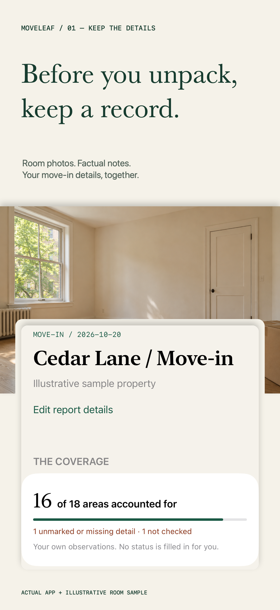
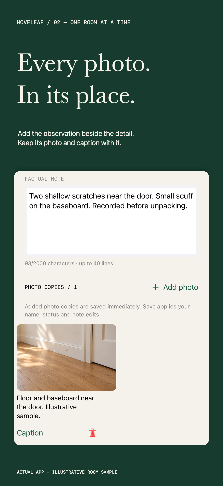
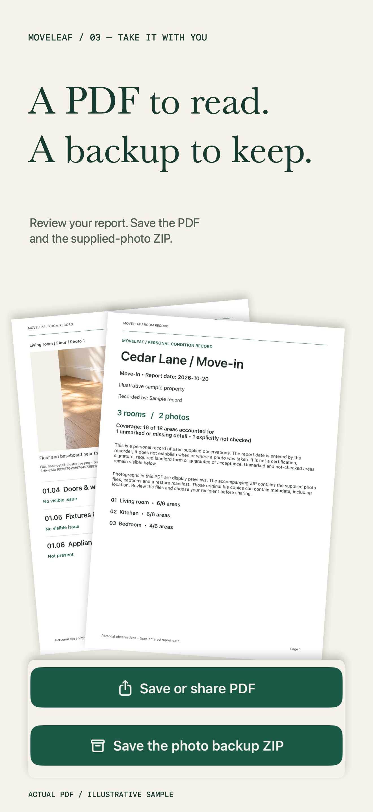
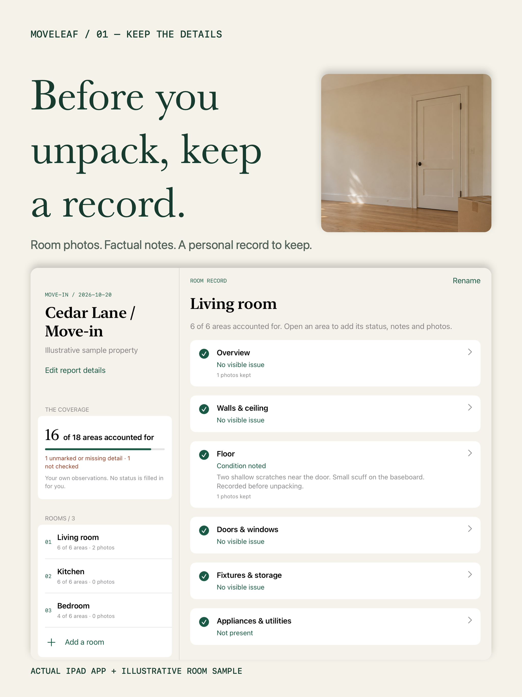

01 / Record
One room at a time.
Work through six named areas. Add your own status, factual notes and supplied photo copies.
Personal room records / iPhone + iPad
A photo belongs with its room. A note belongs with its detail. Moveleaf brings them together in a personal record you can review and keep.
In development · Not yet available on the App Store
01 / Record
Work through six named areas. Add your own status, factual notes and supplied photo copies.
02 / Review
Unmarked, missing-detail and not-checked areas remain clear in the app and the PDF.
03 / Keep
Review the PDF and save the ZIP with supplied photo files and restore data. Restore adds a new checked report.




Free includes one active report with up to three rooms and complete PDF + photo-backup export. Optional Lifetime Pro supports up to ten active reports, twenty rooms per report and ten room templates. One purchase; no subscription.
Both tiers share photo and storage limits. Existing reports remain readable and exportable if Pro is unavailable. Purchases and restore are managed by Apple. See the in-app App Store price.No account, developer backend, tracking or analytics upload. Your report stays on this device. Keep an exported ZIP backup before changing devices or deleting the app; there is no app cloud sync.
Moveleaf records observations supplied by you. It does not certify condition, authenticate photo capture dates, guarantee a deposit outcome or replace required forms, signatures or professional assessments. Sample imagery and property details in marketing are illustrative.